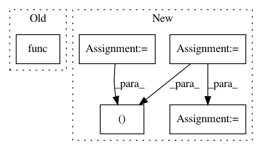

8f87f244813c98b98bbd379f973bdba0ed7a9c72,starry/_core/ops/integration.py,rTReflectedGradientOp,perform,#rTReflectedGradientOp#Any#Any#Any#,98
Before Change
return shapes[:-1]
def perform(self, node, inputs, outputs):
bb = self.base_op.func(*inputs)
outputs[0][0] = np.reshape(bb, np.shape(inputs[0]))
class sTReflectedOp(tt.Op):
After Change
return shapes[:2]
def perform(self, node, inputs, outputs):
b, sigr, rT, ddb, ddsigr, brT = inputs
bb = (brT * ddb).sum(-1)
bsigr = (brT * ddsigr).sum()
outputs[0][0] = np.reshape(bb, np.shape(b))
outputs[1][0] = np.reshape(bsigr, np.shape(sigr))
class sTReflectedOp(tt.Op):
def __init__(self, func, N):
In pattern: SUPERPATTERN
Frequency: 4
Non-data size: 5
Instances
Project Name: rodluger/starry
Commit Name: 8f87f244813c98b98bbd379f973bdba0ed7a9c72
Time: 2020-04-30
Author: rodluger@gmail.com
File Name: starry/_core/ops/integration.py
Class Name: rTReflectedGradientOp
Method Name: perform
Project Name: flow-project/flow
Commit Name: 6a98de289a02db6bd0c715affac9242a52c633e3
Time: 2019-06-10
Author: akreidieh@gmail.com
File Name: flow/visualize/time_space_diagram.py
Class Name:
Method Name: get_time_space_data
Project Name: deepfakes/faceswap
Commit Name: 343392813338ae7b10b0a3bbb3b5a9a7da6e588d
Time: 2020-08-27
Author: 36920800+torzdf@users.noreply.github.com
File Name: lib/model/losses_plaid.py
Class Name: LossWrapper
Method Name: __call__
Project Name: rodluger/starry
Commit Name: 8f87f244813c98b98bbd379f973bdba0ed7a9c72
Time: 2020-04-30
Author: rodluger@gmail.com
File Name: starry/_core/ops/integration.py
Class Name: rTReflectedOp
Method Name: perform